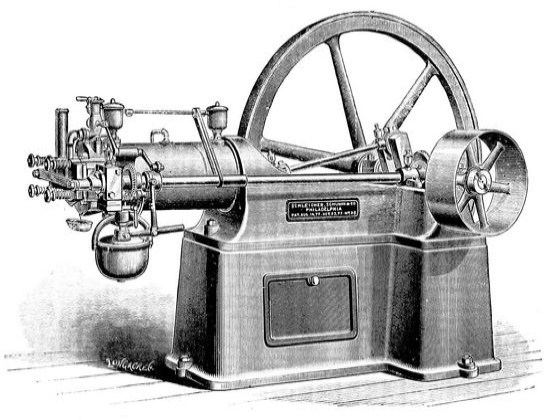
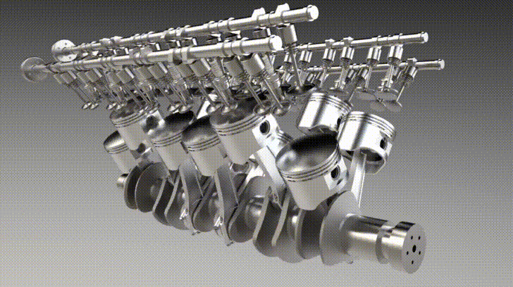
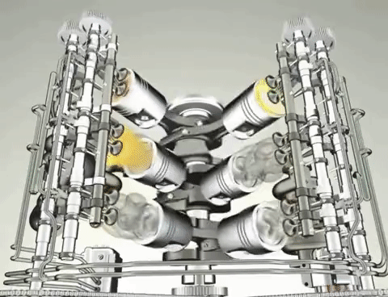
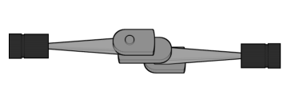
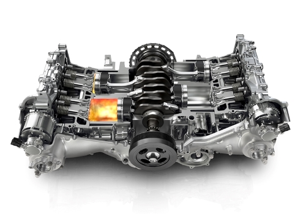
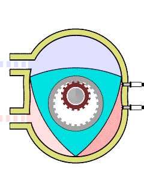
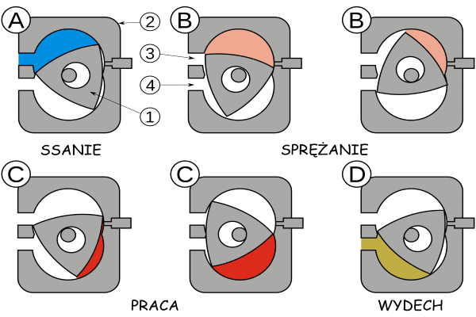

Historia silników spalinowych

Silnik w którym paliwo spalane jest w jego wnętrzu, co dostarcza energii cieplnej. Następnie jest ona zamieniana na energię mechaniczną. Pierwszy taki silnik (w dodatku ekologiczny, bo spalający mieszaninę wodoru z tlenem i wydalający jako spaliny czystą wodę !), pojawił się dzięki Brackenburgowi już w roku 1836, jednakże bezpieczeństwo jego wynalazku nie wzbudziło zaufania u potencjalnych nabywców i o pomyśle niemieckiego wynalazcy szybko zapomniano. W roku 1860 powstał przodek silnika spalinowego. Był to silnik dwusuwowy, jednocylindrowy, pracujący na mieszance gazu ziemnego i powietrza, o zapłonie iskrowym i mocy 8,8 kW; działał na podobnej zasadzie, co maszyna parowa dwustronnego działania, tj. spalanie mieszanki zachodziło w jego cylindrze zarówno pod, jak i nad tłokiem, dzięki układowi dwóch kanałów wlotowych i wylotowych doprowadzających i odprowadzających naprzemiennie mieszankę i spaliny. Nie zachodziło w nim natomiast sprężenie paliwa, a jedynie rozprężanie spowodowane jego wybuchem, i tłok powracał do pozycji wyjściowej. Jego konstruktorem był francuski inżynier, belgijskiego pochodzenia Etienne Lenoir. Oczywiście wpadł on na pomysł, aby wmontować go w lekką bryczkę i przekształcić ją w samochód - parę nieudanych prób zniechęciło go jednak do dalszych eksperymentów. Silnik był niezbyt wydajny, zużywał ogromne ilości gazu i smaru, chodził nierówno i często się zatrzymywał.
Kilka lat później, jego rodak Pierre Ravel skonstruował samochód z silnikiem, w którym spalała się nafta. Niestety, wojna francusko-pruska udaremniła wypróbowanie gotowego pojazdu - został zasypany wraz z szopą w której powstał. Dopiero w 1876 roku, niemiecki samouk - wynalazca Nikolaus Otto skonstruował pierwszy, czterosuwowy silnik spalinowy, co zapoczątkowało erę samochodu. Również dzięki temu wynalazkowi człowiek po raz pierwszy zdołał wzbić się w powietrze samolotem. Od tej chwili nastąpił szybki rozwój silników różnego typu. W latach 1878-79, Carl Benz skonstruował pierwszy silnik spalinowy benzynowy dwusuwowy, natomiast w roku 1893 Rudolf Diesel opatentował pierwszy silnik spalinowy o zapłonie samoczynnym. W 1883 roku Wilhelm Maybach i Gottlieb Daimler budują swój pierwszy, nienadający się jeszcze do wykorzystania w pojazdach ruchomych silnik benzynowy. 12 lutego 1884 roku Edouard Delamare-Deboutteville otrzymuje patent na swój samochód z silnikiem spalinowym, w którym jednak - zamiast benzyny - spala się ... gaz świetlny. A zabawy z gazem (szczególnie zmagazynowanym w skórzanych bukłakach) to nie przelewki: opatentowany samochód Delemare'a już w pierwszej jeździe wylatuje w powietrze.
Jak działa silnik spalinowy?

W większości samochodów pracują dziś silniki spalinowe czterosuwowe z zapłonem iskrowym. Charakteryzują się tym, że tłok w nich wykonuje cztery ruchy i praca ta nazywa się cyklem Otta.
Pierwszy cykl pracy to ssanie i tłok w tym momencie przesuwa się, by umożliwić zassanie mieszanki powietrza z paliwem. Kolejny etap to sprężanie, dzięki któremu dochodzi do „ściskania” paliwa, zaś przy pomocy świecy zapłonowej ma miejsce eksplozja mieszanki paliwowo-powietrznej.
Dzięki temu pojawia się zjawisko pracy, gdy tłok znów jest odpychany, a powstała w ten sposób energia porusza wałem korbowym. Następnie wał zaczyna się kręcić, co doprowadza do ruchu układu napędowego.
Ostatnim etapem pracy jest wydmuchiwanie spalin. Na tym etapie dochodzi do otwarcia zaworu wydechowego, a gazy spalinowe mogą opuścić cylinder silnika spalinowego. Wówczas cykl pracy silnika spalinowego rozpoczyna się od nowa.
Slinik typu rzędowego
Silnik rzędowy – silnik spalinowy wielocylindrowy, w którym cylindry usytuowane są w jednym lub kilku rzędach. Silniki takie stosowane są głównie w motoryzacji, do napędu samochodów i motocykli. Silniki rzędowe oznacza się w Polsce Rx – gdzie x oznacza liczbę cylindrów.

W praktyce spotyka się:
- R2 – taki układ miał silnik stosowany w Polskim Fiacie 126p, jest także stosowany w niektórych modelach Fiata (najpierw Fiat 500),
- R3 – układ znany m.in. z silnika stosowanego w samochodzie Syrena, Daewoo Tico czy Škoda Auto Fabia i Volkswagen Polo IV
- R4 – najpopularniejszy typ silnika rzędowego stosowany przez wielu producentów. Silnik używany także w tankietce Tančik vz.33,
- R5 – silniki pięciocylindrowe rzędowe stosuje m.in. Volvo, Lancia, Ford, Volkswagen np.: LT 35, bardzo często Audi i dawniej Mercedes-Benz,
- R6 – silniki sześciocylindrowe rzędowe stosuje m.in. Volvo, BMW, dawniej Mercedes-Benz i Opel,
- R8 – silniki ośmiocylindrowe rzędowe stosowano głównie przed II wojną światową, niekiedy były to jednostki powstałe z połączenia szeregowego dwóch silników R4.
Przy silnikach z większą liczbą cylindrów rzadko stosuje się układ rzędowy z uwagi na dużą długość silnika, częściej układ widlasty. Cylindry w silnikach rzędowych mogą być usytuowane pionowo, poziomo lub ukośnie. Silniki czterosuwowe rzędowe posiadające 6 cylindrów (i więcej) mają pełne wyrównoważenie od sił I i II rzędu i z tego powodu są chętnie stosowane jako źródło napędu samochodów ciężarowych. Silniki 4 cylindrowe mają wyrównoważenie częściowe, natomiast w silnikach 3 cylindrowych stosuje się wałek wyrównoważający celem zmniejszenia poziomu drgań. Jako silniki rzędowe, zwłaszcza w lotnictwie, określa się także silniki widlaste, silniki w układzie W i w układzie X czy układzie H (w odróżnieniu od silników gwiazdowych).
Silnik typu widlastego
Silnik widlasty (silnik typu V) – silnik tłokowy wielocylindrowy rzędowy, w którym cylindry umieszczone są w dwóch rzędach usytuowanych względem siebie pod pewnym kątem np. 90°. Oba rzędy cylindrów napędzają jeden wspólny wał korbowy. Specyficzną odmianą jest płaski silnik V - rozwarcie między rzędami cylindrów wynosi 180°, nie mylić z bokserem.

Spotyka się następujące silniki widlaste:
- V2 – stosowane do napędu motocykli, np. Harley-Davidson, Moto Guzzi, Yamaha Virago, Yamaha V-Star
- V4 – pionierem w produkcji tego typu silników jest Lancia. Pojawiły się one w latach 20' XX wieku. Stosowali je też inni producenci samochodów m.in. V4 produkowane w kolońskiej fabryce Ford, stosowane w samochodach Ford Granada, Ford Taunus. Konstrukcja Forda zastosowana została również w Saabie 95. Silnik znalazł również zastosowanie w samochodach młodszych - Pontiac 1.8. Obecnie konstrukcja stosowana do napędu motocykli np. Honda VFR.
- V5 – najbardziej nietypowy z silników o układzie V. Konstrukcja Volkswagena. Powstał jako rozwinięcie koncepcji silnika VR6. Jednostka V5 montowana była w Volkswagenach Passat/Golf/Bora/Jetta, a także w Seacie Toledo (typu 1M) z roku 1999.
- V6 – zaprezentowany po raz pierwszy w 1950 roku przez producenta samochodów Lancia. Najpopularniejsza konstrukcja sześciocylindrowych silników do napędu samochodów osobowych. Znajduje zastosowanie w wielu pojazdach - stosowane przez konstruktorów znakomitej większości modeli oraz jako silniki bolidów F1. Warto wymienić również konstrukcje VR6 - silnik Volkswagena o niewielkim kącie rozwidlenia.
- V8 – np. w Audi V8 3.6, 4.2 BMW 3.0 do 4.9, silniki Mercedesa, Ferrari, Maserati oraz silniki bolidów F1. Konstrukcja bardzo często stosowana jako jednostka napędowa samochodów amerykańskich,
- W8 – silnik podwójnie widlasty, zbudowany z dwóch połączonych jednostek V4. Montowany był w samochodzie Volkswagen Passat W8.
- V10 – np. Audi, Lamborghini, Dodge Viper, Volkswagen Touareg, Volkswagen Phaeton (diesel), BMW M5 i M6 oraz do 2005 roku silniki bolidów F1.
- V12 – np. Aston Martin, Audi, BMW, Ferrari, Lamborghini, Mercedes-Benz,
- W12 – silnik podwójnie widlasty, zbudowany z trzech rzędów po 4 cylindry każdy. Koncern VW produkuje silniki W12 w innej konfiguracji (oznaczane czasem WR12), zbudowane z czterech rzędów (dwóch połączonych jednostek V6) po 3 cylindry każdy
- V16 – układ stosowany w dużych silnikach kolejowych i okrętowych oraz do celów energetyki. Stosowany również do napędu samochodów osobowych marki Cadillac przed II wojną światową
- W16 – silnik podwójnie widlasty, w samochodach koncernu VW zbudowany z czterech rzędów (dwóch połączonych jednostek V8) po 4 cylindry każdy. Znany z samochodu Bugatti Veyron.
- V18 – układ stosowany w dużych silnikach kolejowych i okrętowych oraz do celów energetyki.
- W18 – silnik podwójnie widlasty, próbował zastosować go VW w samochodach Bugatti i na jego podstawie VW stworzył silnik W16. Bardzo nietypowy, posiadał 3 rzędy po 6 cylindrów.
- V20 – układ stosowany w silnikach okrętowych oraz do celów energetyki.
- V24 – układ stosowany w silnikach okrętowych oraz do celów energetyki.

Silnik widlasty V8 ma gorsze wyrównoważenie niż silnik R6, gdyż dopiero od 6 wykorbień wzwyż wału korbowego tzw. siły pierwszego i drugiego rzędu są sprowadzone do zera. W konstrukcjach współczesnych stopniowo odchodzi się od silników z liczbą cylindrów większą niż 12. Jest to spowodowane dużymi kosztami produkcji i serwisu tych silników, natomiast wysokie parametry robocze (moc, moment obrotowy) udaje się uzyskać poprzez wydajne układy doładowania silnika. Silniki widlaste mają bardziej złożoną budowę niż jednostki rzędowe, gdyż mają dwie głowice. Dwa zestawy zaworów położone w oddalonych od siebie głowicach wymagają specyficznego napędu rozrządu, który pochłania więcej energii niż rozrząd silnika rzędowego. Większe nakłady energii na napęd rozrządu powiększone o straty ciepła z większej kubatury powodują, że silniki widlaste mają mniejszą sprawność od jednostek rzędowych. Sześciocylindrowe jednostki rzędowe pracują idealnie. Ich układ korbowo-tłokowy jest zrównoważony dlatego nie generują drgań i nie wymagają dodatkowych elementów wyważających. Silniki V6 rozwarte pod kątem 90 stopni wymagają wyrównoważenia za pomocą jednego wałka. Natomiast silniki V6 rozwarte pod kątem 60 stopni mogą pracować z powodzeniem bez wałka wyrównoważającego. W tym przypadku tłumienie drgań osiąga się za pomocą odpowiednio dobranych
przeciwciężarów i dwumasowego koła zamachowego.
Zalety
- Mniejsza długość silnika (krótszy wał korbowy)
- Bardziej zwarta konstrukcja
- Możliwość uzyskania dużych pojemności skokowych i dużych mocy
Wady
- Bardziej złożona konstrukcja stopy korbowodu
- Przy stosowaniu korbowodu doczepnego różna pojemność skokowa pomiędzy cylindrami pierwszego i drugiego rzędu (różnice pomijalne)
- Przy pewnych kątach rozwidlenia skłonność do drgań silnika.
Silnik typu boxer
Silnik o przeciwległych cylindrach – silnik spalinowy wielocylindrowy o parzystej liczbie tłoków, w którym cylindry usytuowane są na wspólnej osi.

Silniki takie mogą być przeciwbieżne, gdy każdy z tłoków ma swoją komorę spalania (bokser) albo współbieżne ze wspólną lub rozdzielną komorą spalania. Układ ten zapewnia niższy niż w konwencjonalnych silnikach poziom hałasu i wibracji oraz niższy spadek mocy. Wszystko to w związku z procesem znoszenia się sił działających na tłoki. Konstrukcja takiego silnika jest jednak dość skomplikowana, z powodu duplikacji niektórych układów takich jak rozrząd (podobnie jak w układach V), przez co jest droga i stosunkowo rzadko stosowana. Silniki tego typu znane pod nazwą „silnik bokser” tradycyjnie stosowane są w motocyklach firmy BMW czy samochodach firm Subaru, Porsche, oraz starszych modelach Alfa Romeo czy Volkswagen Garbus. Znajdują również zastosowanie w lotnictwie lekkim (Lycoming, Continental, Rotax).

Firma Subaru jest przekonana, że silnik z poziomo i przeciwsobnie ustawionymi cylindrami (termin „boxer” lub po prostu „bokser”, jest częściej używaną nazwą tej właśnie konfiguracji silnika) to optymalne rozwiązanie, pozwalające na osiągniecie najwyższego zadowolenia kierowcy. W układzie tym tłoki skierowane są parami dokładnie w przeciwne strony, a więc płaszczyzny, w których pracują, rozchylone są o 180 stopni, zaś wał korbowy znajduje się dokładnie w centrum tego układu. Z tego, że każda para tłoków silnika przeciwsobnego zawsze wykonuje ruchy w przeciwnych kierunkach, wynika bardzo ważny fakt – siły bezwładności takiej pary tłoków samoistnie się równoważą, a zatem układ korbowo – tłokowy przekazuje na zewnątrz znacznie mniej drgań, niż ma to miejsce w silnikach o innym układzie cylindrów. W rezultacie silnik w układzie bokser pracuje z wyjątkowo małymi oporami wewnętrznymi w każdym zakresie obrotów wału korbowego i nie wymaga stosowania dodatkowych urządzeń czy mas wyważających, a to z kolei powoduje, że reaguje on na naciśnięcie gazu wyjątkowo szybko, przynosząc kierowcy szczególną satysfakcję. Kolejną zaletą silnika przeciwsobnego jest to, że jego długość i wysokość są znacznie mniejsze niż odpowiadającej mu jednostki np. w układzie rzędowym. Ponadto zwarta konstrukcja pozwala na skuteczne zastosowanie lekkiego materiału – aluminium – do budowy jego kadłuba. W efekcie jednostka jest sztywna i lekka, a poza tym może być zamontowana w komorze silnikowej w ten sposób, że jej środek masy znajduje się bardzo nisko. Skutkuje to korzystnym wyważeniem całego samochodu – jego środek masy znajduje się również nisko i nie jest nadmiernie przesunięty do przodu. Symetryczna budowa silnika i jego symetryczne ustawienie w osi podłużnej auta powodują także, że auto pozostaje idealnie wyważone w płaszczyźnie poprzecznej do jego osi. Wszystkie te czynniki skutkują stabilnym, bezpiecznym, a przede wszystkim przynoszącym satysfakcję zachowaniem auta na drodze.
Silnik Wankla
 W tym silniku tłok w kształcie zbliżonym do trójkąta (trójkąt Reuleaux o lekko wypukłych bokach), mimośrodowo umieszczony w epitrochoidalnym korpusie, obracając się, tworzy komory: ssawną, sprężania, rozprężania (pracy) i wydechową. W zależności od kąta obrotu tłoka komory te zmieniają kształt i objętość. W czasie jednego obrotu wału silnik wykonuje 4 cykle pracy – ssanie (napełnienie komory roboczej świeżym ładunkiem mieszanki paliwowo-powietrznej), sprężanie, pracę (rozprężanie gazów spalinowych) oraz wydech (usuwanie spalin) – silnik dwusuwowy wykonuje w czasie jednego obrotu wału jeden cykl pracy, czterosuwowy zaś na jeden cykl pracy potrzebuje dwóch obrotów wału. W momencie gdy mieszanka paliwowo-powietrzna jest maksymalnie sprężona, następuje zapłon. Mieszanka paliwowo-powietrzna dostarczana jest przez kanał doprowadzający, a spaliny odprowadzane przez kanał odprowadzający. Ruch tłoka jest przenoszony na mimośrodowe odcinki wału centralnego. Ruch rotora jest kształtowany przez koła zębate nieruchomo przymocowane do płaskich ścian komory i współosiowe z wałem centralnym.
Silnik Wankla po raz pierwszy zastosowano seryjnie w samochodach NSU Spider – prezentacja miała miejsce w roku 1963 na salonie samochodowym we Frankfurcie. Cztery lata później firma Mazda zaprezentowała sportowy samochód Cosmo Sport z pierwszym silnikiem z dwiema komorami wyprodukowanym na licencji NSU-Wankla. W roku 1968 do produkcji wszedł model NSU Ro 80, także z silnikiem dwukomorowym.
Głównymi zaletami silnika Wankla są stosunkowo małe rozmiary i masa, prosta konstrukcja (mniejsza liczba elementów niż w klasycznych silnikach), niewielkie wibracje, niska hałaśliwość podczas pracy oraz osiąganie wysokich prędkości obrotowych i wysoka sprawność mechaniczna. Mimo to jest on stosowany rzadko, zaś wiele prób rozpowszechnienia tego typu silnika zakończyło się niepowodzeniem z powodu problemów konstrukcyjnych i technologicznych.

Do produkcji rotorów oraz bloku silnika używano stopów na tyle słabych, że silniki zużywały się dosyć szybko.
Główne wady silnika to trudne do uszczelnienia obszary pracy związane z przedmuchami; z tego względu mniejsze jest ciśnienie sprężania i mniejsza sprawność termodynamiczna.
Są też większe straty ciepła na skutek bardzo niekorzystnej (szerokiej i płaskiej) komory spalania – co zwiększa straty ciepła i generuje naprężenia termiczne związane z "gorącą" i "zimną" strefą pracy silnika. Nie bez znaczenia jest też spore jednostkowe zużycie paliwa i duża emisja gazów spalinowych na jednostkę mocy.Ta wada, wraz z niedostateczną trwałością uszczelnień tłoka, jest powodem małego zainteresowania tym silnikiem w praktyce motoryzacyjnej. Były nawet sytuacje, gdy bloki silnikowe na skutek naprężeń termicznych nie wytrzymywały i pękały. W praktyce konstrukcja silnika była bardzo trudna do uszczelnienia, a silnik zużywał dużo paliwa.
Wraz z rozwojem techniki firma Mazda pokonała te problemy i zastosowała swój silnik w samochodzie Mazda RX-7. Obecnie już nie produkuje się tego modelu. Zastąpił go nowszy Mazda RX-8. Zastosowany w modelu RX-8 silnik Wankla nazwano Renesis. Kilkakrotnie zdobył on nagrody za najlepszy silnik roku. Konstrukcja silnika jest na tyle uniwersalna, że firma Mazda testuje silnik Wankla – Renesis używający jako paliwa wodoru (RX-8 Hydrogen RE concept car). Po wprowadzeniu w 2009 liftingu modelu RX-8 prócz zewnętrznych zmian wprowadzono
szereg modyfikacji w silniku co przyczyniło się do zmniejszenia jego awaryjności. W 2011 roku Mazda ogłosiła, że pracuje nad
kolejną wersją tego silnika o nazwie 16x.